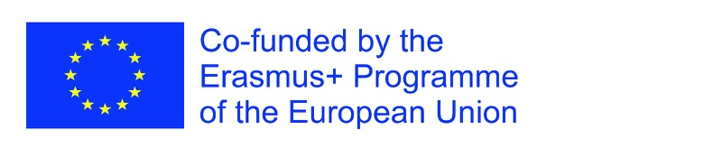

Educational resources
Open courses
Free online courses on digital health from European projects that WG EDU members took part in. Use them for self-study or as material in your own teaching.
eHealth4all@EU courses
Three interprofessional courses built on the TIGER recommendations in the Erasmus+ project eHealth4all@EU – Interprofessional European eHealth Programme in Higher Education (2019–2022, Grant Agreement Number 2019-1-DE01-KA203-005040), led by Osnabrück University of Applied Sciences with the University of Eastern Finland, the University of Porto and Osnabrück University. They run on the Moodle platform of Osnabrück University of Applied Sciences.
How to get in: open a course. The login page is in German: choose Anmelden als Gast (log in as a guest), then enter the guest password EFMI_EDU. You do not need an account.
Interoperability
Standards and methods for exchanging health data between information systems.
Data Analytics
Working with health data: preparing, analysing and interpreting it for care and management.
Data Protection and Security
Privacy, data protection law and information security in health care.
Project results: Intellectual Outputs
The seven Intellectual Outputs of eHealth4all@EU, from the review of eHealth education in Europe to the curricular framework, the course materials, the evaluation and the final report. Each PDF includes its appendices.
- IO1: European eHealth Education: Policy and Practice Review. Kinnunen UM, Mannevaara P, Saranto K, Hübner U, Egbert N, Vieira-Marques P, Sousa P. Lead: University of Eastern Finland. PDF, 32 pages, 1.4 MB
- IO2: eHealth Education: Pedagogical Methods Compilation. Babitsch B, Pöche-Guckelberger I, Hübner U, Egbert N. Lead: Osnabrück University. PDF, 21 pages, 1.4 MB
- IO3: Curricular Framework. Vieira-Marques P, Correia RC, Egbert N, Haukkakallio T, Hübner U, Ikonen J, Kinnunen UM, Saranto K. Lead: University of Porto. PDF, 16 pages, 0.5 MB
- IO4: E-Learning / B-Learning – Course Material. Hübner U, Egbert N, Hüsers J, Correia RC, Haukkakallio T, Ikonen J, Kinnunen UM, Vieira-Marques P, Saranto K. Lead: Osnabrück University of Applied Sciences. PDF, 148 pages, 9.3 MB
- IO5: European Summer School on eHealth – Course Material. Hübner U, Egbert N, Hüsers J, Correia RC, Haukkakallio T, Ikonen J, Kinnunen UM, Vieira-Marques P, Saranto K. Lead: Osnabrück University of Applied Sciences. PDF, 386 pages, 11.4 MB
- IO6: Evaluation. Saranto K, Ikonen J, Haukkakallio T, Kinnunen UM, Babitsch B, Hübner U, Egbert N, Vieira-Marques P. Lead: University of Eastern Finland. PDF, 220 pages, 2.5 MB
- IO7: Final Report. Vieira-Marques P, Correia RC, Hübner U, Egbert N, Kalthoff D, Babitsch B, Kinnunen UM, Saranto K. Lead: University of Porto. PDF, 46 pages, 3.8 MB
This work is licensed under the Creative Commons Attribution-NonCommercial-ShareAlike 4.0 International License (CC BY-NC-SA 4.0).
Notice on third-party rights: if you believe any content infringes upon copyrights, please notify us at n.egbert@hs-osnabrueck.de for immediate removal.

Add a course
Has your project produced an open course on biomedical and health informatics? Share it and a WG member will review it.